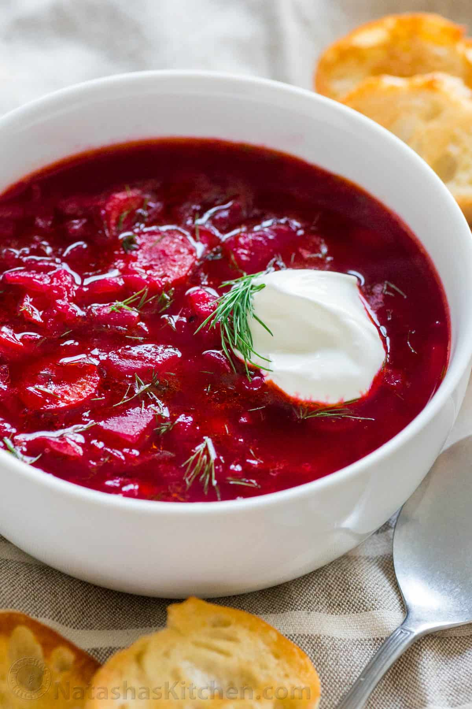

Borscht

Decription
An ideal soup to soothe your winter days.
Let's find out how to prepare Borscht!
Ingredients:
- 2 medium beets, peeled and grated
- 2 carrots, peeled and grated
- 1 onion, finely chopped
- 2 cloves garlic, minced
- 4 cups beef or vegetable broth
- 2 cups shredded cabbage
- 1 can of diced tomatoes
- 2 potatoes, peeled and diced
- Salt and pepper
- Sour cream, for serving
- Fresh dill, for garnish
Steps:
- Mix beef, onion, garlic, salt and pepper.
- Saute onion and garlic until soft.
- Add beets, carrots, broth, cabbage, tomatoes, and potatoes.
- Simmer until vegetables are tender.
- Season with salt and pepper to taste.
- Serve hot with dollop of sour cream and garnish with fresh dill. Enjoy your borscht!